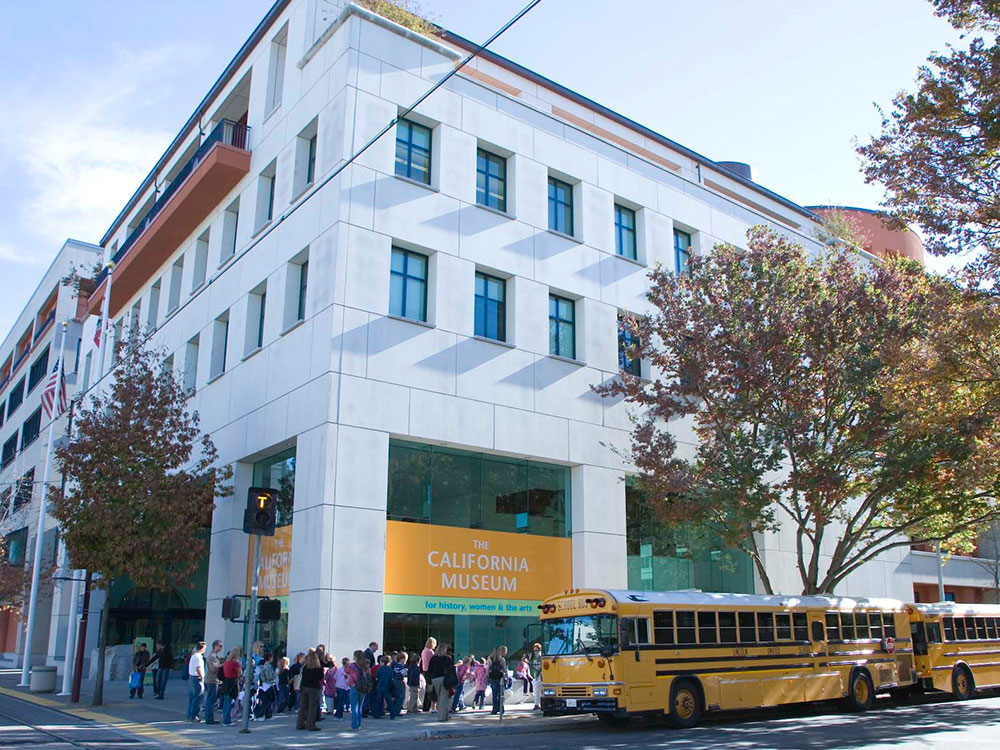
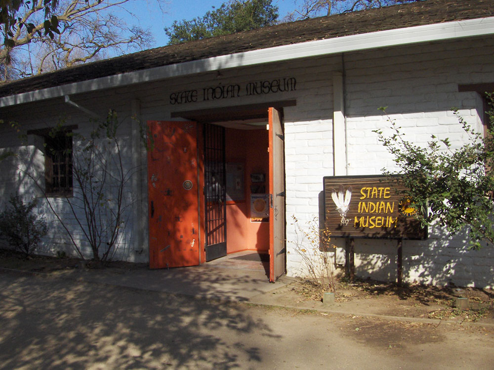
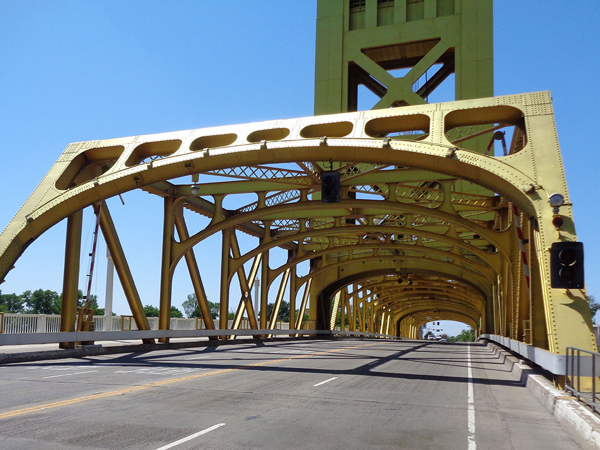
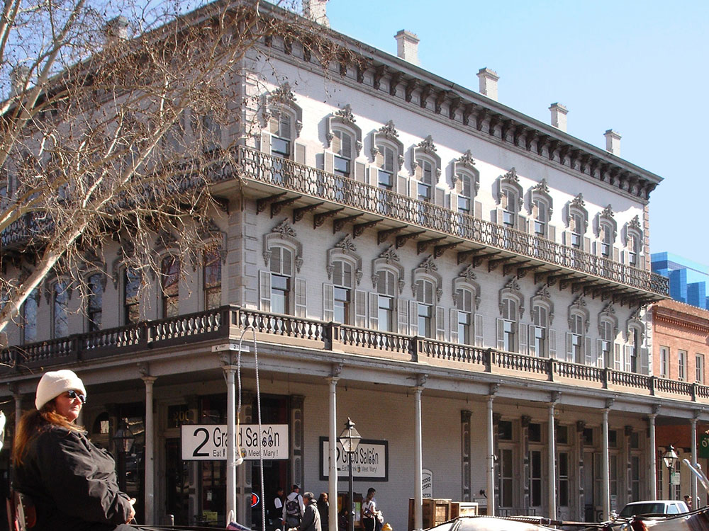
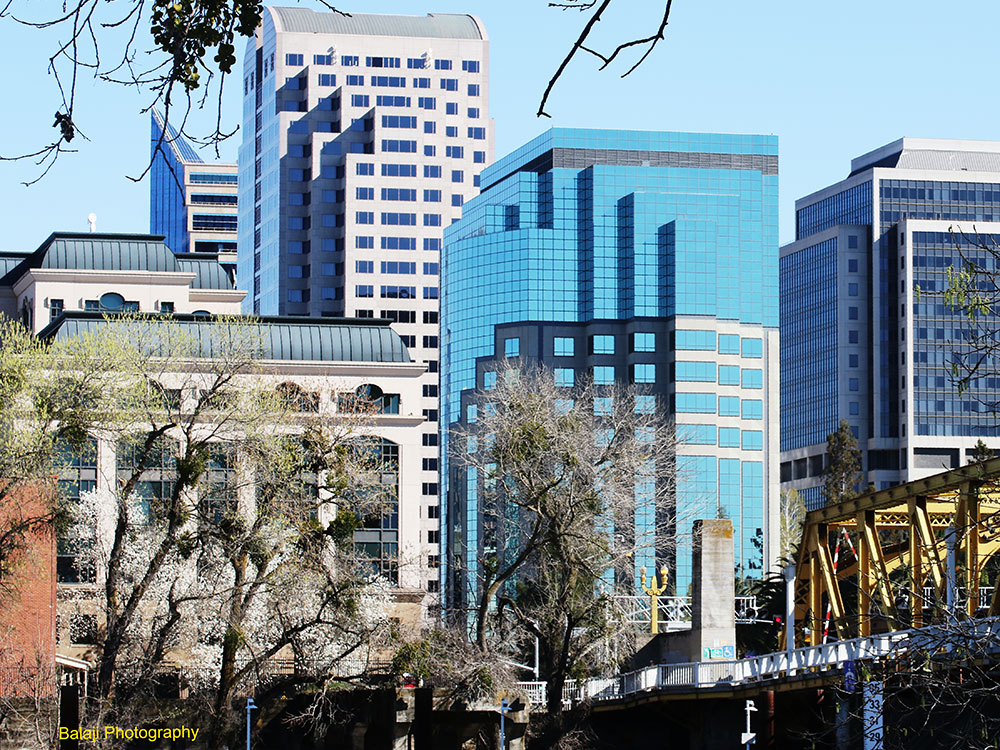
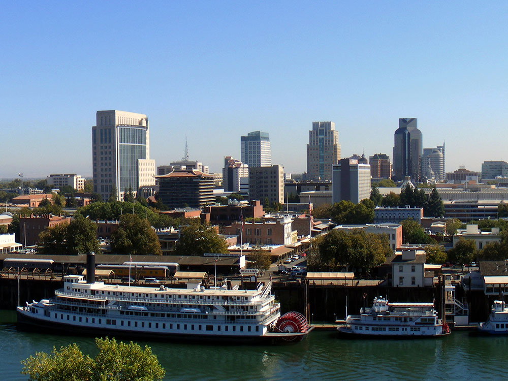

.jpg){kind=link}
Cheyenne Travel Guide
Historic Western city known for its railroad roots, cowboy culture, and annual rodeo celebrations that highlight frontier heritage.
Places to See in Cheyenne

Dough4872, CC BY-SA 4.0, via Wikimedia Commons; Image Size Adjusted

Cheyenne Botanic Gardens
Public garden complex featuring a solar-powered conservatory, themed outdoor gardens, and a children’s village with interactive exhibits.
Dough4872, CC BY-SA 4.0, via Wikimedia Commons; Image Size Adjusted
Cheyenne Depot Museum
Historic train station museum featuring exhibits on the transcontinental railroad, model trains, and the legacy of western rail travel.
Dough4872, CC BY-SA 4.0, via Wikimedia Commons; Image Size Adjusted
Cheyenne Depot Plaza
Historic plaza featuring a restored railroad depot, museum exhibits, and an open-air venue for concerts, festivals, and community events.
Dough4872, CC BY-SA 4.0, via Wikimedia Commons; Image Size Adjusted
Cheyenne Frontier Days Old West Museum
Western heritage museum featuring rodeo memorabilia, historic wagons, and rotating exhibits celebrating the legacy of Cheyenne Frontier Days.
Dough4872, CC BY-SA 4.0, via Wikimedia Commons; Image Size Adjusted
Cowgirls of West Museum
Volunteer-run museum honoring the pioneering women of the American West through exhibits on rodeo, ranching, and frontier life.
Dough4872, CC BY-SA 4.0, via Wikimedia Commons; Image Size Adjusted
Military Memorial Museum
Specialized military collection featuring historic uniforms, insignia, and memorabilia from U.S. Army and Air Force General Officers.
Dough4872, CC BY-SA 4.0, via Wikimedia Commons; Image Size Adjusted
Nelson Museum of West
Extensive private collection showcasing cowboy gear, Native American artifacts, military memorabilia, and fine Western art.
Dough4872, CC BY-SA 4.0, via Wikimedia Commons; Image Size Adjusted
Wyoming State Capitol
Renaissance Revival-style government building housing Wyoming’s legislative and executive branches, open for public tours.
Dough4872, CC BY-SA 4.0, via Wikimedia Commons; Image Size Adjusted
Wyoming State Museum
State-run museum offering exhibits on Wyoming’s natural history, cultural heritage, and frontier-era development.
Overview
Cheyenne is the capital and largest city of Wyoming, in the southeastern corner of the state on the High Plains, and it is known for its Wild West heritage, its Union Pacific railroad history, and Cheyenne Frontier Days, the largest outdoor rodeo and western celebration in the world. The city is home to the gold-domed Wyoming State Capitol and sits at an elevation of 6,062 feet, with F.E. Warren Air Force Base, a missile base, nearby. Its location along Interstates 25 and 80 makes it a crossroads for travelers across the West.
Visitors come to Cheyenne for Frontier Days in late July, for the Cheyenne Frontier Days Old West Museum, and for the Wyoming State Capitol. They also come for the Cheyenne Depot Museum, the Cheyenne Botanic Gardens, and the Wyoming State Museum.
History
The Cheyenne, Arapaho, and Lakota peoples lived on the plains, and the city was founded in 1867 as the Union Pacific Railroad's rail terminus, becoming a "Hell on Wheels" town overnight, with thousands of railroad workers, gamblers, and outlaws. Named for the Cheyenne, it was called the "Magic City of the Plains," and it became the territorial capital in 1869, and the state capital when Wyoming became a state in 1890. Cattle barons built the grand mansions of Cheyenne, and the first Frontier Days rodeo was held in 1897. During the twentieth century, the city grew around the railroad, F.E. Warren, and state government.
Sightseeing and Popular Landmarks
The Wyoming State Capitol, completed in 1888, has a golden dome and is open for free tours, and the Union Pacific Depot, built in 1887, is a grand Richardsonian Romanesque landmark now housing the Cheyenne Depot Museum. The Cheyenne Frontier Days Old West Museum has a large collection of carriages, including a Wells Fargo coach, and the Nelson Museum of the West has Western artifacts. The Cheyenne Street Railway Trolley offers narrated tours of the historic district, and the Cowgirls of the West Museum honors women of the West.
Culture and Museums
The Wyoming State Museum has exhibits on the state's history, from dinosaurs to statehood, and the Military Memorial Museum honors Wyoming's veterans. The Cheyenne Depot Plaza has concerts and farmers markets in summer, and Cheyenne Frontier Days, held for ten days in July, has rodeo events, a parade, a carnival, pancake breakfasts, and concerts by country music stars. The Wyoming State Museum and the Cheyenne Botanic Gardens round out the offerings.
Parks
The Cheyenne Botanic Gardens, in Lions Park, has a conservatory, a children's village, and gardens that are among the highest in elevation in the country, and Lions Park has a lake and a rose garden. The Cheyenne Greenway is a 40-mile paved trail, and Curt Gowdy State Park, 24 miles west, has granite formations, lakes, and trails. Terry Bison Ranch, south of town, offers train rides among bison.
Seasons and Weather
Cheyenne has a semi-arid continental climate and is one of the windiest cities in the country. Summers are warm, with highs in the 80s°F and thunderstorms, and winters are cold and windy, with highs in the 30s°F and about 60 inches of snow. Spring snowstorms and hail are common, and Frontier Days in July is the busiest time.
This article uses material from Wikipedia as well as information from official tourism and institutional sources. Key references include Visit Cheyenne, Cheyenne Frontier Days, Wyoming State Museum, Wyoming Office of Tourism, and National Weather Service Cheyenne. Wikipedia material is from the articles "Cheyenne, Wyoming" and "Cheyenne Frontier Days", and is available under the Creative Commons Attribution-Share-Alike License 3.0.



User:Ronbo76, CC BY-SA 3.0, via Wikimedia Commons; Image Size Adjusted



.jpg){kind=link}

.jpg){kind=link}

.jpg){kind=link}